library(SpatialExperiment)
library(SpatialFeatureExperiment)
library(Voyager)
library(HDF5Array)
library(alabaster.sfe)
library(SpotSweeper)
library(scuttle)
library(scrapper)
library(scater)
library(escheR)
library(ggplot2)
library(ggside)
library(ggspavis)
library(patchwork)Exercise 2A: Visium HD QC
Quality control at cell-level
In this second exercise, we will focus on the critical step of quality control (QC) for sequencing-based spatial transcriptomics data. We will focus on the segmented Visium HD dataset used in Exercise 1C, so each observation is an individual cell with the selected region of interest. QC helps flag low-quality cells or technical artifacts before downstream analysis.
Note
A similar QC can be done per bin or aggregated bin if a binned analysis of Visium HD is performed.
Learning objectives
By the end of this exercise, you will be able to:
- Calculate per-cell QC metrics.
- Identify local outliers based on various QC metrics.
- Detect spatial artifacts using
SpotSweeper. - Visualize QC metrics and detected artifacts.
Libraries
Calculate QC metrics
We will start by calculating QC metrics that are also commonly used in scRNA-seq data analysis: total UMI counts, number of detected genes, and percentage of UMIs originating from genes of the mitochondrial genome. Here these metrics are calculated per segmented cell and used to identify low-quality cells.
We will start by loading our SpatialFeatureExperiment object, which was saved in the previous exercise, and prepare it for quality control analysis.
# Reload the SpatialFeatureExperiment object if not in the R session already
sfe <- readObject("results/day1/01.1c_sfe_visium/")
## Otherwise, quickly go through Exercise day1-1c to recreate the object
# Identify mitochondrial genes (genes with symbol starting with "MT-")
is.mito <- rownames(sfe)[grepl("^MT-", rownames(sfe))]Now, we will calculate per-cell QC metrics using the scuttle package. The function addPerCellQCMetrics adds QC metrics, including mitochondrial gene percentage, to the colData of the SpatialFeatureExperiment object.
Note
This function will soon be deprecated and replaced by a faster function in the scrapper package (function quickRnaQc.se()).
Run the following code to compute these metrics:
sfe <- addPerCellQCMetrics(sfe, subsets = list(Mito = is.mito))
ImportantExercise 1
Check which metadata has been added to colData. Do you recognize the different metrics?
TipAnswer
# Display the colData to see the newly added QC metrics.
colData(sfe)DataFrame with 34874 rows and 8 columns
sample_id area sum detected subsets_Mito_sum
<character> <numeric> <numeric> <integer> <numeric>
cellid_000080404-1 sample01 747.265 800 679 44
cellid_000080411-1 sample01 800.215 345 317 21
cellid_000080412-1 sample01 853.515 370 338 8
cellid_000080429-1 sample01 641.400 733 604 66
cellid_000080439-1 sample01 692.900 796 663 43
... ... ... ... ... ...
cellid_000189312-1 sample01 1067.80 913 687 74
cellid_000189323-1 sample01 1547.49 1102 782 109
cellid_000189331-1 sample01 319.80 164 149 3
cellid_000189341-1 sample01 2398.50 1066 773 59
cellid_000189343-1 sample01 3255.97 2820 1780 206
subsets_Mito_detected subsets_Mito_percent total
<integer> <numeric> <numeric>
cellid_000080404-1 10 5.50000 800
cellid_000080411-1 9 6.08696 345
cellid_000080412-1 5 2.16216 370
cellid_000080429-1 10 9.00409 733
cellid_000080439-1 10 5.40201 796
... ... ... ...
cellid_000189312-1 11 8.10515 913
cellid_000189323-1 11 9.89111 1102
cellid_000189331-1 3 1.82927 164
cellid_000189341-1 11 5.53471 1066
cellid_000189343-1 12 7.30496 2820- The
sumcolumn contains the total number of unique molecular identifiers (UMIs) per cell - The
detectedcolumn contains the number of unique genes detected per cell - The
subsets_Mito_percentcolumn contains the percentage of transcripts mapping to mitochondrial genes per cell
Global outlier detection
In order to detect low-quality cells and filter them out, QC methods similar to those from scRNA-seq analysis can be applied. A simple approach is to apply a fixed upper or lower threshold to a metric across all cells and remove the cells that do not pass the filtering criteria.
To set up these thresholds and adapt them to this technology, we can look for information from 10x Genomics and the community, for example https://github.com/10XGenomics/HumanColonCancer_VisiumHD/issues/28. Based on this discussion the authors of the OSTA book wrote (see “Remove bins overlaying empty tissue” section in https://lmweber.org/OSTA/pages/seq-workflow-visium-hd-bin.html#dependencies):
Based on a discussion with the original author at 10x Genomics, in this dataset, 8 µm bins with a library size below 100 are removed. Since we expect a 4-fold increase in library size across all bins at 16 µm, we can set the filtering threshold to 400.
This is not exactly transposable to the segmented cell output, but conveys the message that the UMI counts are low, much lower than what is observed with scRNA-seq data! We can also have a look and plot distributions of the values to decide which is the best cutoff:
# Plot library size vs. detected genes
p1 <- ggcells(sfe, aes(x=detected, y=sum)) +
geom_point() +
geom_density_2d() +
scale_x_log10() +
scale_y_log10() +
geom_xsidehistogram() +
geom_ysidehistogram() +
geom_vline(xintercept = 200, col="red", lty=2) +
geom_hline(yintercept = 300, col="red", lty=2) +
labs(y="Number of UMIs", x="Number of detected genes") +
ggtitle("Library size vs. detected")
# Plot mito proportion vs. detected genes
p2 <- ggcells(sfe, aes(x=detected, y=subsets_Mito_percent)) +
geom_point() +
geom_density_2d() +
scale_x_log10() +
geom_xsidehistogram() +
geom_ysidehistogram() +
geom_vline(xintercept = 200, col="red", lty=2) +
geom_hline(yintercept = 10, col="red", lty=2) +
labs(y="% mitochondrial reads", x="Number of detected genes") +
ggtitle("Mito proportion vs. genes detected")
p1 + p2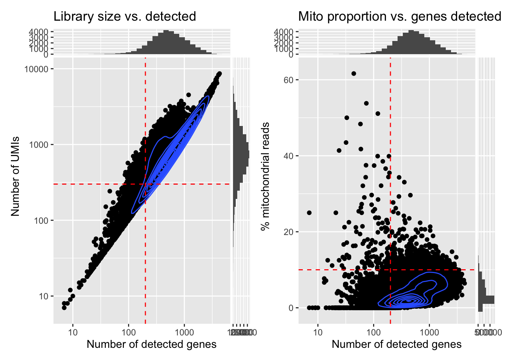
And further check how many cells would be removed with the given thresholds:
# Flag cells based on fixed thresholds
sfe$qc_lib_size <- sfe$sum < 300
sfe$qc_detected <- sfe$detected < 200
sfe$qc_mito_prop <- sfe$subsets_Mito_percent > 10
# Tabulate number of cells flagged by each
qc <- grep("^qc", names(colData(sfe)))
sapply(colData(sfe)[qc], table) qc_lib_size qc_detected qc_mito_prop
FALSE 30425 31429 33638
TRUE 4449 3445 1236
ImportantExercise 2
What do you think about this potential QC filtering?
Have a look at the metrics on the tissue section using the plotting functions used in the previous practical, or with the plotObsQC() function from the ggspavis package. Where are the cells that would be excluded with such global cutoffs?
Try using more stringent cutoffs to see which cells would be excluded. What do you notice? What does it tell us retrospectively about the use of global cutoffs in the analysis of scRNA-seq data?
TipAnswer
## Plot the metrics
p1 <- plotSpatialFeature(sfe, colGeometryName = "cellSeg", features = "subsets_Mito_percent") +
theme(plot.title=element_text(hjust=0.5)) +
scale_fill_gradientn(colors=pals::jet())
p2 <- plotSpatialFeature(sfe, colGeometryName = "cellSeg", features = "sum") +
theme(plot.title=element_text(hjust=0.5)) +
scale_fill_gradientn(trans = "log", colors=pals::jet())
p1 + p2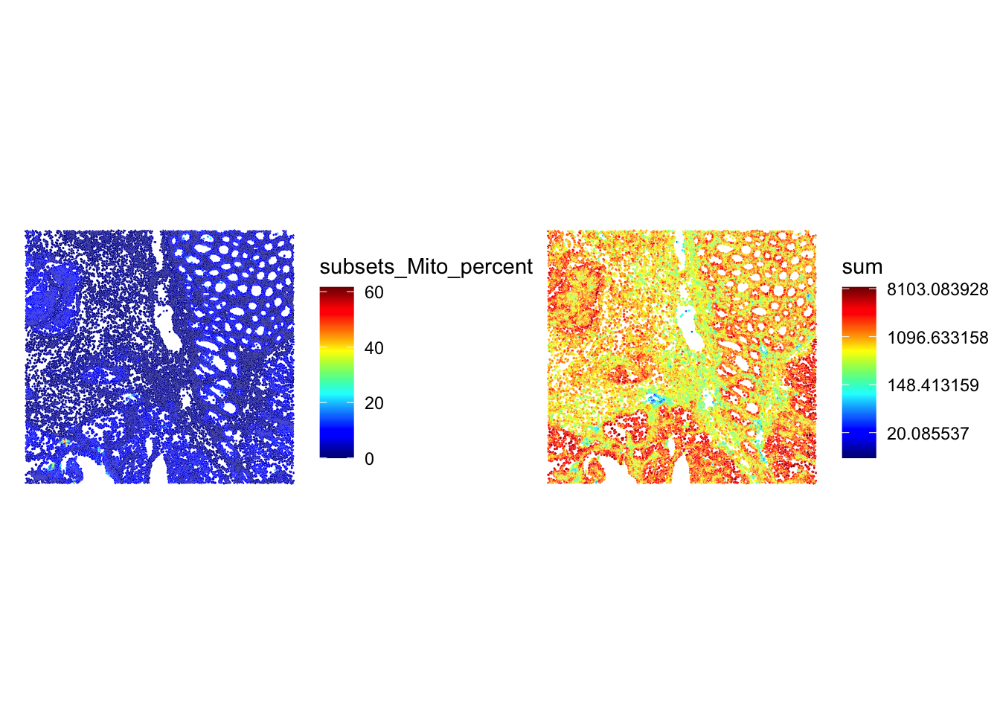
## Which cells would be excluded
p1 <- plotSpatialFeature(sfe, colGeometryName = "cellSeg", features = "qc_lib_size") +
theme(plot.title=element_text(hjust=0.5)) +
scale_fill_manual(values = c("beige", "red"))
p2 <- plotSpatialFeature(sfe, colGeometryName = "cellSeg", features = "qc_mito_prop") +
theme(plot.title=element_text(hjust=0.5)) +
scale_fill_manual(values = c("beige", "red"))
p1 + p2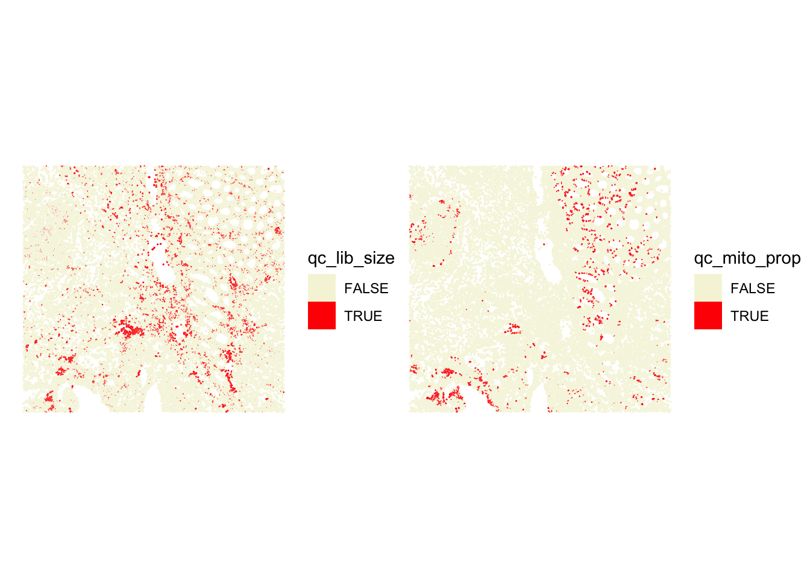
## A similar plot using the ggspavis::plotVisium() function (y-coordinates are flipped!)
p1 <- plotVisium(sfe, annotate = "sum", image = FALSE) +
theme(plot.title=element_text(hjust=0.5)) +
scale_fill_gradientn(colors=pals::jet())
p2 <- plotVisium(sfe, annotate = "sum", image = FALSE) +
theme(plot.title=element_text(hjust=0.5)) +
scale_fill_gradientn(trans = "log", colors=pals::jet())
p1 + p2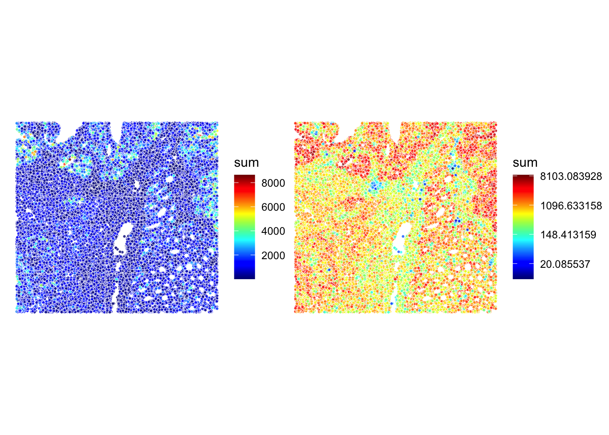
## or with the ggspavis::plotObsQC() function
p1 <- plotObsQC(sfe,
plot_type="spot", annotate="qc_lib_size") +
ggtitle("Library size (< 300 UMI)")
p2 <- plotObsQC(sfe,
plot_type="spot", annotate="qc_mito_prop") +
ggtitle("Mito proportion (> 10%)")
p1 + p2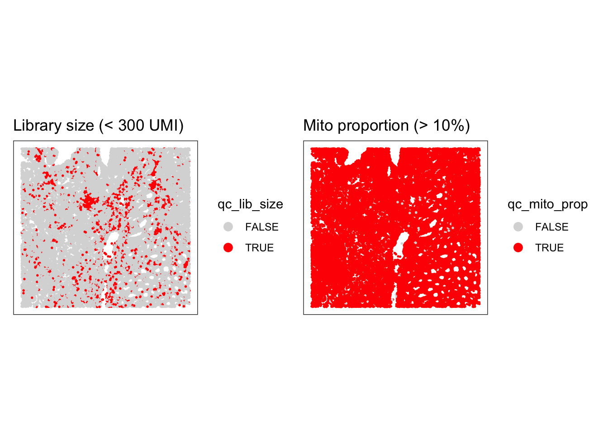
Stringent cutoffs lead to excluding cells in specific cellular structures, so quite likely excluding some specific cell types, which is not ideal. We have the opportunity to see that directly on the slide here, which is not the case when we analyze scRNA-seq data… There, a choice of a stringent cutoff can filter out entirely some cell types without us noticing!
Local Outlier Detection
To avoid discarding whole layers of tissue, another approach to identify low-quality cells is to use local outlier detection methods that take into account the spatial context of each cell.
The SpotSweeper package provides functions to identify local outliers based on common QC metrics (such as the ones we have seen in the previous section: library size, number of detected genes, and mitochondrial percentage).
We will use localOutliers from SpotSweeper, which helps identify cells that deviate significantly from their local neighborhood.
# Identify local outliers based on library size ("sum" of counts).
# cells with unusually low library size compared to their neighbors will be flagged.
sfe <- localOutliers(sfe,
metric = "sum",
direction = "lower",
log = TRUE
)
# Identify local outliers based on the number of unique genes detected ("detected").
# cells with an unusually low number of detected genes will be flagged.
sfe <- localOutliers(sfe,
metric = "detected",
direction = "lower",
log = TRUE
)
# Identify local outliers based on the mitochondrial gene percentage.
# cells with an unusually high mitochondrial percentage will be flagged.
sfe <- localOutliers(sfe,
metric = "subsets_Mito_percent",
direction = "higher",
log = FALSE
)
# Combine all individual outlier flags into a single "local_outliers" column.
# A cell is considered a local outlier if it is flagged by any of the above metrics.
sfe$local_outliers <- as.logical(sfe$sum_outliers) |
as.logical(sfe$detected_outliers) |
as.logical(sfe$subsets_Mito_percent_outliers)
ImportantExercise 3
How many cells were identified as local outliers based on the combined criteria?
As we have seen before, visualizing the QC metrics is crucial for understanding the quality of your spatial transcriptomics data and for deciding on appropriate filtering strategies, so look at their spatial localization using for example the plotObsQC function. What do you think?
TipAnswer
# Count the number of cells flagged as local outliers.
table(sfe$local_outliers)
FALSE TRUE
34533 341 plotObsQC(sfe,
plot_type="spot", annotate="local_outliers") +
ggtitle("All local outliers")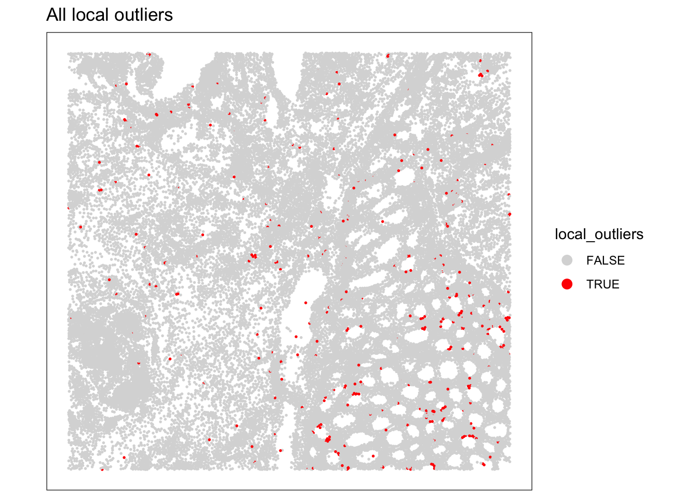
We can visualize the spatial distribution of the local outliers together with the QC metrics, for example plot the spatial distribution of local outliers for mitochondrial percentage.
plotQCmetrics(sfe,
metric = "subsets_Mito_percent", outliers = "subsets_Mito_percent_outliers",
point_size = 1, stroke = 0.5
) +
ggtitle("Local outliers for %MT")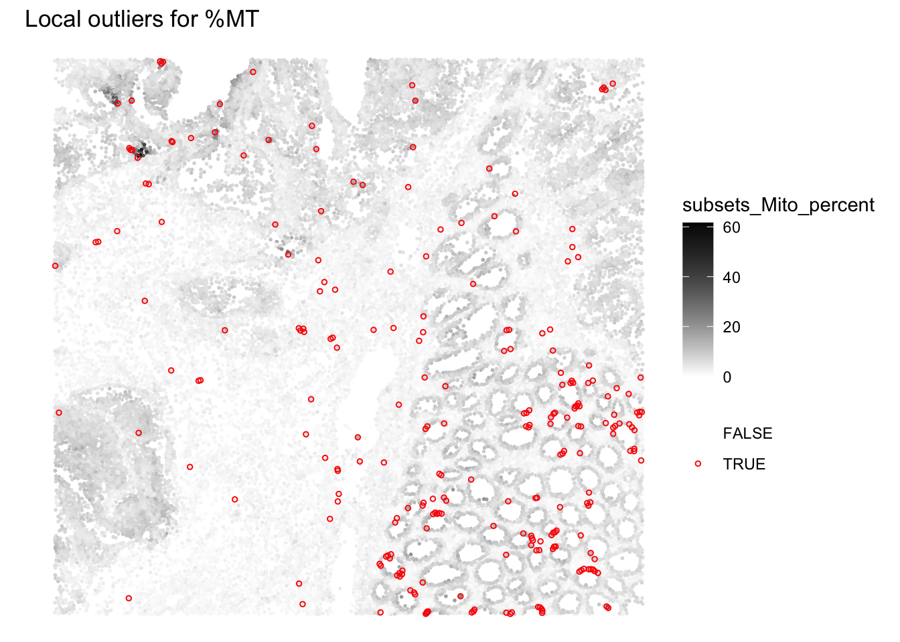
Overall we observe that very few outliers are detected. In regions where cells were spotted wiht global cutoffs, we notivce here that the cells that do not differ from their neighbourhood are not flagged anymore.
ImportantExercise 4
Plot the spatial distribution of local outliers for library size and number of detected genes. What do you observe?
TipAnswer
# Plot the spatial distribution of local outliers for library size.
plotQCmetrics(sfe,
metric = "sum_log", outliers = "sum_outliers",
point_size = 1, stroke = 0.5
) +
ggtitle("Local outliers for number of UMIs")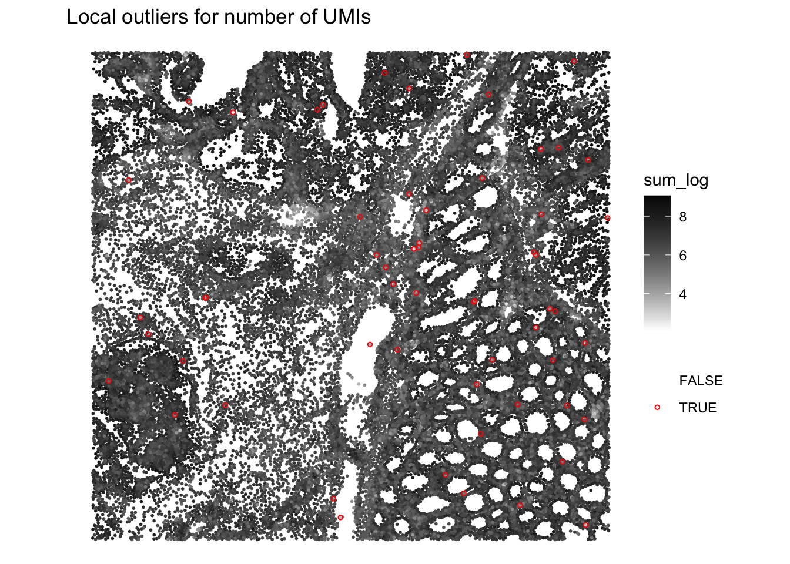
# Plot the spatial distribution of local outliers for number of detected genes.
plotQCmetrics(sfe,
metric = "detected_log", outliers = "detected_outliers", point_size = 0.4,
stroke = 0.75
) +
ggtitle("Local outliers for number of detected genes")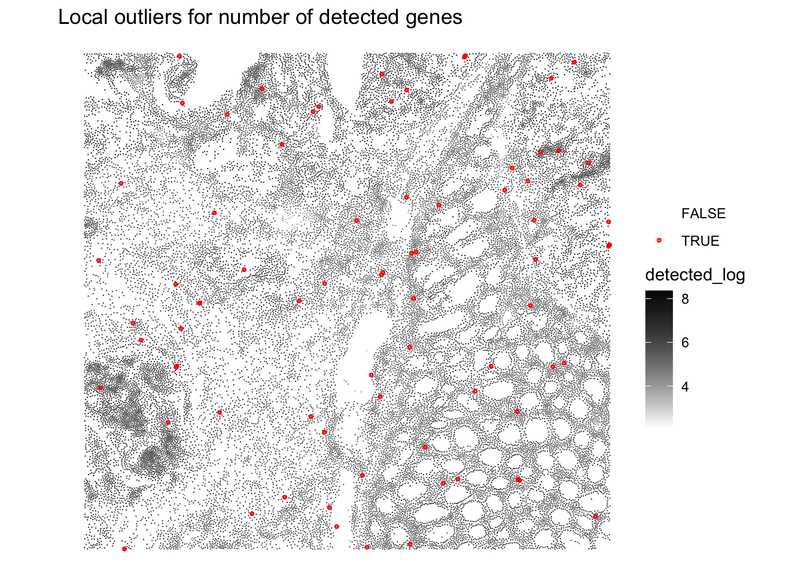
Very few cells seem to be flagged as outliers
We can visualize the z-scores from the local outlier detection test and compare them to the global threshold used earlier. How do you interpret this?
plotObsQC(sfe, plot_type = "violin", x_metric = "subsets_Mito_percent_z", annotate = "qc_mito_prop")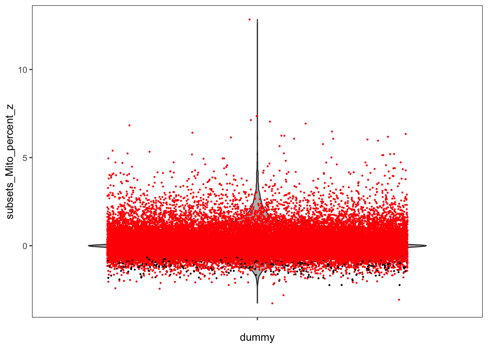
TipAnswer
We notice that some cells that were labeled as outliers based on a global cutoff are not outliers anymore relative to their local neighborhood, and conversely.
Compare and combine global and local outliers and apply filtering
For the next steps we choose to: - adjust the global cutoffs to be less stringent - combine the (new) global and local outliers to perform the QC filtering
# adjust global filtering cutoff
sfe$qc_lib_size <- sfe$sum < 120
sfe$qc_detected <- sfe$detected < 100
sfe$qc_mito_prop <- sfe$subsets_Mito_percent > 30
# compare global and local outliers being flagged
sfe$global_outliers <- sfe$qc_lib_size | sfe$qc_detected | sfe$qc_mito_prop
p1 <- plotObsQC(sfe, plot_type="spot", annotate="global_outliers")
p2 <- plotObsQC(sfe, plot_type="spot", annotate="local_outliers")
gridExtra::grid.arrange(p1, p2, ncol=2)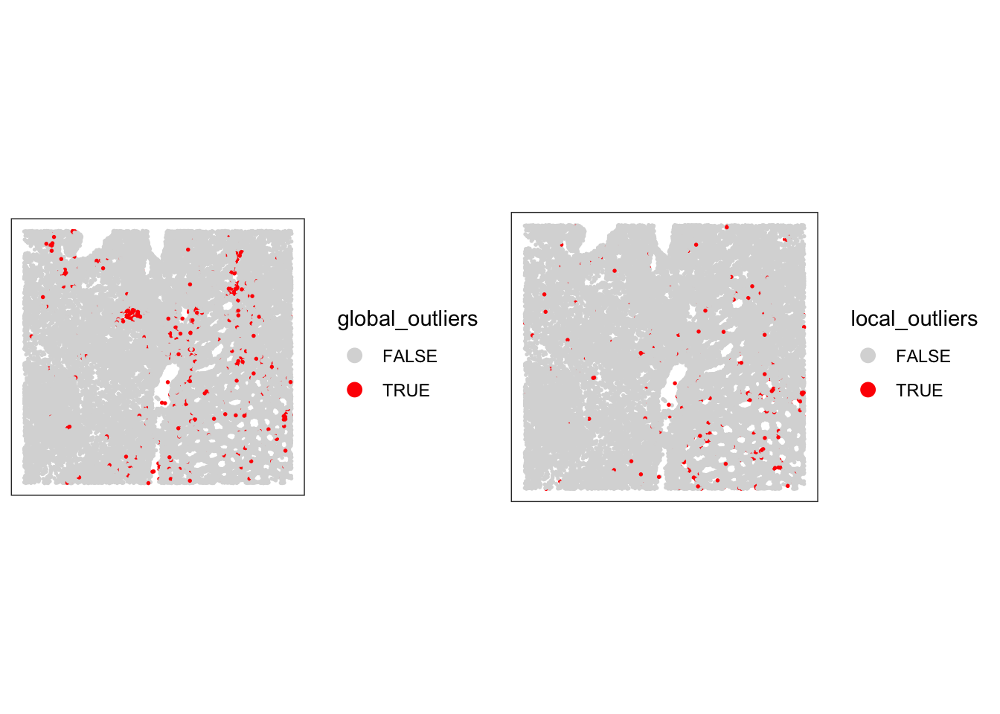
# combine local and global outliers to create a final discard flag
sfe$discard <- sfe$global_outliers | sfe$local_outliers
ImportantExercise 5
Visualize the cells that will be discarded based on the combined criteria. How many cells will be removed?
TipAnswer
# check how many cells will be discarded
table(sfe$discard)
FALSE TRUE
33763 1111 # have a final look at the cells that we will discard
plotSpatialFeature(sfe, colGeometryName = "cellSeg", features = "discard")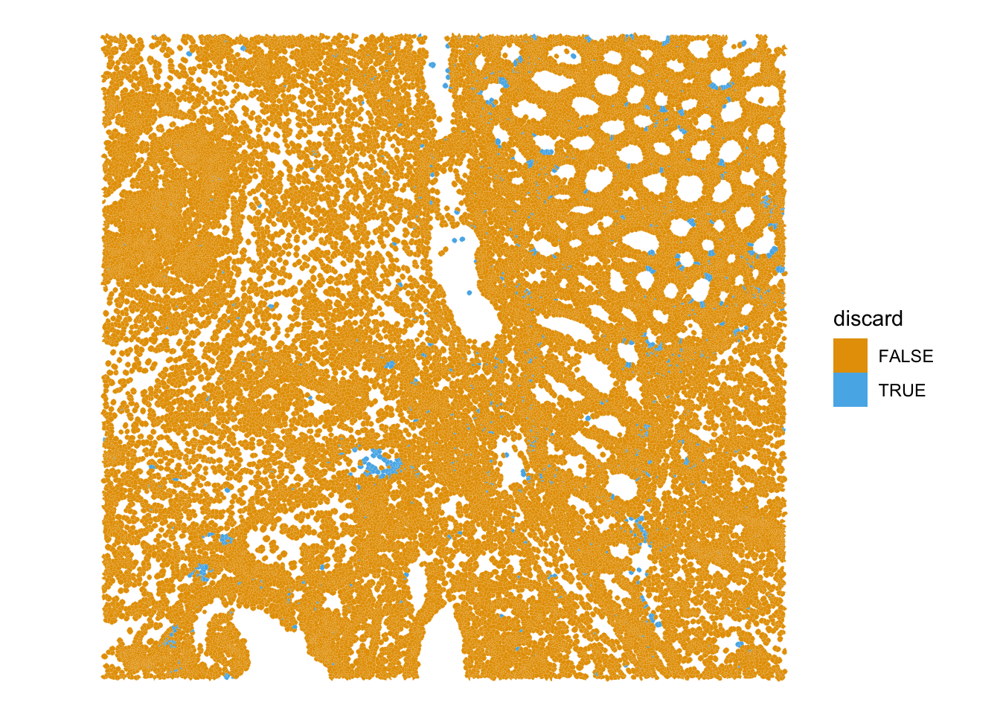
Bonus: region-level technical artifacts
Technical artifacts can arise during tissue preparation, for example tissue dissection can cause mechanical damage, leading to large areas with artificially low biological heterogeneity. These can be detected with the findArtifacts function of the spotSweeper package.
# find artifacts using SpotSweeper
sfe <- tryCatch(
findArtifacts(sfe,
mito_percent = "subsets_Mito_percent",
mito_sum = "subsets_Mito_sum",
n_order = 5,
name = "artifact"
),
error = function(e) {
message(
"findArtifacts() could not fit an artifact model for this subset: ",
conditionMessage(e)
)
sfe$artifact <- FALSE
sfe
}
)
ImportantExercise 6
What is the findArtifacts function performing and what are the (potentially problematic) assumptions?
Plot the spatial distribution of the artifact column identified by SpotSweeper. What do you observe?
TipAnswer
# Plot the spatial distribution of the detected artifacts.
plotQCmetrics(sfe,
metric = "subsets_Mito_percent",
outliers = "artifact",
point_size = 1.1
) +
ggtitle("Detected Spatial Artifacts")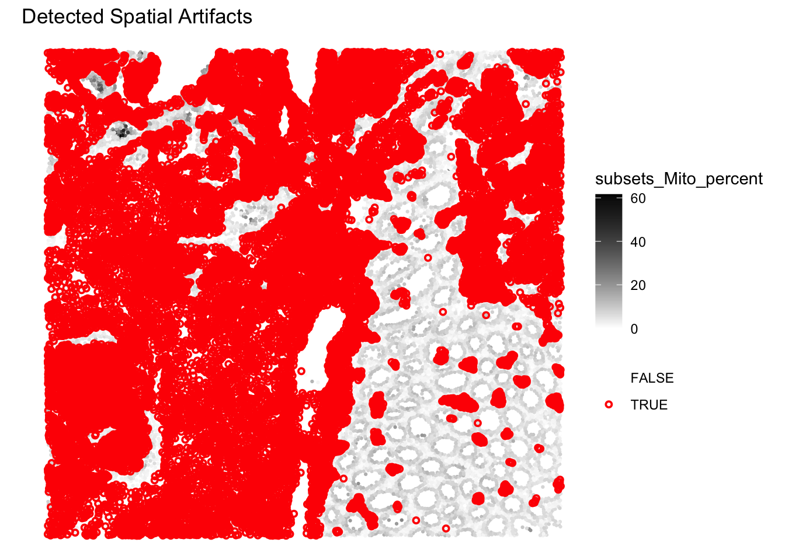
The function is detecting region-level artifacts, such as “hangnail” artifacts, based on the multiscale variance of mitochondrial ratio. The exact methodology can be found in the paper and is actually quite complex and ad hoc (i.e., they devised this method after studying carefully the properties of their brain tissue section): https://pmc.ncbi.nlm.nih.gov/articles/PMC12258134/.
Here indeed the method separates two global-regions, one on the left with less variability in %MT, and one on the right with more variability. Does this mean that the region on the left should be excluded here? Probably not…
Filtering
We decide to filter out the low-quality cells from the SpatialFeatureExperiment object based on the combined criteria of global thresholds and local outliers. Additionally, we will remove any features (genes) that have zero counts across all remaining cells.
# remove the cells considered of low quality based on both global and local metrics
sfe <- sfe[, !sfe$discard]
# remove features no count at all
sfe <- sfe[rowSums(counts(sfe)) > 0, ]
sfeclass: SpatialFeatureExperiment
dim: 18878 33763
metadata(2): resources spatialList
assays(1): counts
rownames(18878): OR4F5 SAMD11 ... DEPRECATED_ENSG00000291096
DEPRECATED_TRIM16L
rowData names(4): ID Symbol Type subsets_Mito
colnames(33763): cellid_000080404-1 cellid_000080411-1 ...
cellid_000189331-1 cellid_000189341-1
colData names(30): sample_id area ... k90 artifact
reducedDimNames(1): PCA_artifacts
mainExpName: Gene Expression
altExpNames(0):
spatialCoords names(2) : pxl_col_in_fullres pxl_row_in_fullres
imgData names(4): sample_id image_id data scaleFactor
unit:
Geometries:
colGeometries: centroids (POINT), cellSeg (POLYGON)
Graphs:
sample01: What is the size of the dataset after filtering?
Save the object
Save the filtered SpatialFeatureExperiment object for the next steps:
alabaster.sfe::saveObject(sfe, "results/day1/01.2_sfe_visium")Clear your environment:
rm(list = ls())
gc()
.rs.restartR()
Important
Key Takeaways:
scuttle::addPerCellQCMetricsprovides essential per-cell QC metrics.SpotSweeper::localOutliershelps identify individual problematic cells relative to their local context.SpotSweeper::findArtifactsis more controversial but could in certain case be useful to detect region-level artifacts- Visualizing QC results is critical for data interpretation and downstream analysis decisions.